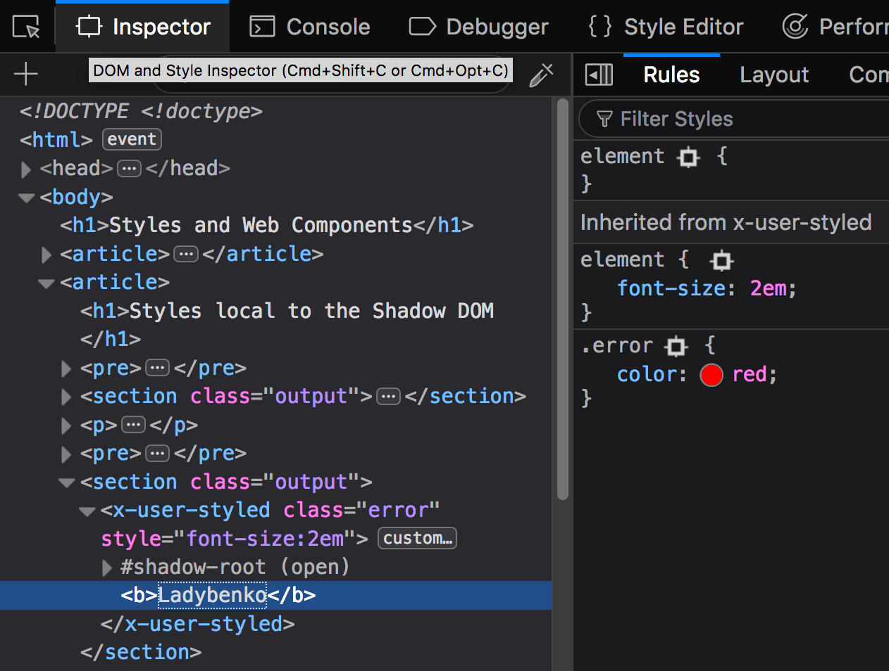

Style applied to host element
.host {
padding: 0.5rem 1rem;
box-shadow: 0 0 0.3rem rgba(0, 0, 0, 0.25);
}
<x-user class="host">Ladybenko</x-user>.host {
padding: 0.5rem 1rem;
box-shadow: 0 0 0.3rem rgba(0, 0, 0, 0.25);
}
<x-user class="host">Ladybenko</x-user>We can set custom styles for the shadow DOM with a <style> tag inside the shadow root:
<x-user-styled>
Ladybenko
</x-user-styled>Note how em units and properties that cascade go through the shadow DOM:
<x-user-styled style="font-size:2em">
<b>Ladybenko</b>
</x-user-styled>This can be seen in the Inspector (look for Inheried from x-user-styled in the Rules panel):
